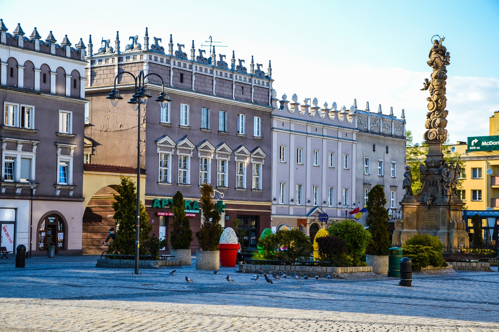

Racibórz - miasto w Polsce, w województwie śląskim; siedziba władz powiatu raciborskiego. Racibórz jest obok Opola jedną z historycznych stolic Górnego Śląska, gdzie rezydowali książęta opolsko-raciborscy. Do dzisiaj zachowało się wiele cennych zabytków, m.in. kaplica zamkowa pw. św. Tomasza Kantuaryjskiego, zwana perłą gotyku śląskiego. Miasto jako pierwsze w Polsce i Europie otrzymało certyfikat Systemu Zarządzania Środowiskowego ISO 14001. Według danych z 31 grudnia 2019 r. miasto miało 54 739 mieszkańców.
Racibórz znajduje się w południowej części Polski, a jego współrzędne geograficzne to 18º 13' długości geograficznej wschodniej i 50º 05' szerokości geograficznej północnej. Miasto jest oddalone o 30 km od Ostrawy, 75 km od Katowic, 75 km od Opola, 145 km od Krakowa, 160 km od Wrocławia oraz 350 km od Warszawy.Racibórz pod względem administracyjnym leży w południowo-zachodniej części województwa śląskiego, w powiecie raciborskim, niedaleko granicy z Czechami. Graniczy od północy z gminami Rudnik i Nędza, od wschodu z gminami Kornowac i Lyski, od zachodu z gminą Pietrowice Wielkie, a od południa z gminami Krzanowice, Krzyżanowice i Lubomia.Racibórz jest centralnym miastem powiatu, który tworzą obok Raciborza miasta Kuźnia Raciborska i Krzanowice, jak również duże gminy wiejskie Krzyżanowice, Nędza, Rudnik, Kornowac i Pietrowice Wielkie. Swoją siedzibę w mieście mają Starostwo Powiatowe, a także oddziały instytucji takich jak Powiatowa Stacja Sanitarno-Epidemiologiczna, Wojewódzki Zarząd Melioracji i Urządzeń Wodnych, Ośrodek Doradztwa Rolniczego, Agencja Restrukturyzacji i Modernizacji Rolnictwa.
Na terenie Raciborza występują dwa poziomy wodonośne: czwartorzędowy i trzeciorzędowy. Wody podziemne znajdujące się na poziomie czwartorzędowym powiązane są z piaskami i żwirami dolin rzecznych i pradoliny miasta. Wody te znajdują się w utworach ilastych miocenu i tworzą porowy system hydrauliczny. Wody podziemne znajdujące się na poziomie trzeciorzędowym związane są z wkładkami lub soczewkami piaszczystymi i piaszczysto-żwirowymi, których miąższość kształtuje się w przedziale 2–38 m. Zalegają one w kompleksie ilastym sarmatu i tortonu. Ponadto wody te związane są z klastycznymi utworami pliocenu, które wypełniają struktury kopalne w stropie trzeciorzędu. Również tworzą one porowy system hydrauliczny.
Racibórz znajduje się w całości w dorzeczu Odry, która jest osią hydrograficzną całego regionu. Sieć rzeczną miasta stanowi Odra wraz z jej lewym dopływem Psiną z Troją o długości ok. 55 km, a także prawym dopływem Rudą długości ok. 50 km i Suminą. Gęstość sieci rzecznej waha się w przedziale 0,5–1 km/100 km². Odra to druga co do wielkości rzeka Polski, która swój początek bierze w Czechach w Górach Odrzańskich, na południowo-wschodnim stoku wzniesienia Fidlův kopec, który znajduje się 680 m n.p.m. W około 20 km biegu rzeki w miejscowości Chałupki znajduje się przekrój graniczny. W miejscu, w którym rzeka przekracza granicę jej nurt znajduje się na wysokości 195 m n.p.m. Natomiast przy ujściu rzeki Ruda koło Kuźni Raciborskiej znajduje się na wysokości 178 m n.p.m. W związku z tym jej spadek jest niewielki i stanowi ok. 17 m na 40 km.